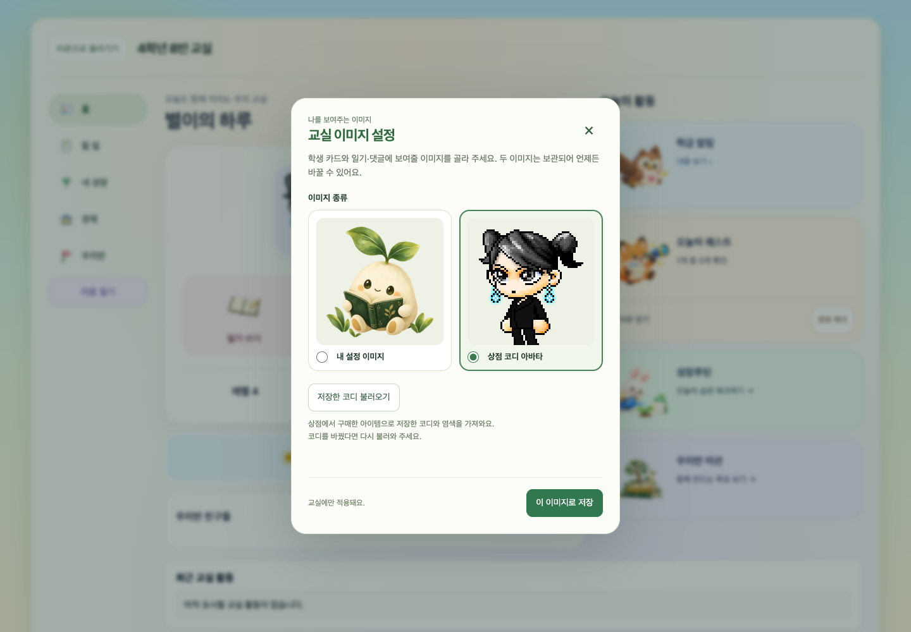

운영 배포 완료 · 검증 통과우리 교실 — 학생 카드·마음 일기
2026년 10월 17일 · 퀴즈타운 열기
새로고침 후 ‘우리 교실’에 입장하면 학생 카드 홈에서 이미지 선택, 일기 작성, 친구 일기와 댓글을 사용할 수 있습니다.
- Hosting의 교실 관련 14개 파일과 신규 일기 함수 1개만 반영했습니다.
- 동시 진행 중이던 퀴즈 화면 배포를 감지해 최신 운영본에서 다시 적용했습니다. 나머지 운영 파일 3,779개, 번들 모듈 66개와 Hosting 설정을 보존했습니다.
- 공유 HTML·앱 번들의 로컬 전체 교체, 레거시 퀴즈 변경, 기존 함수·보안 규칙·학생 데이터 직접 수정은 제외했습니다.
- 전체 검사, 실제 함수의 로컬 권한 검사, 배포 후보의 모바일·데스크톱 검증, 운영 해시와 공개 화면 로드 검증을 통과했습니다.
배포 영수증·파일 해시·검증 상세 · 전체 검사 로그
아래 이미지는 배포한 운영 소스 기반 후보를 합성 학생 데이터로 실행한 화면입니다. 실제 학생의 기록은 테스트로 변경하지 않았습니다.내 이미지 또는 상점 아바타
